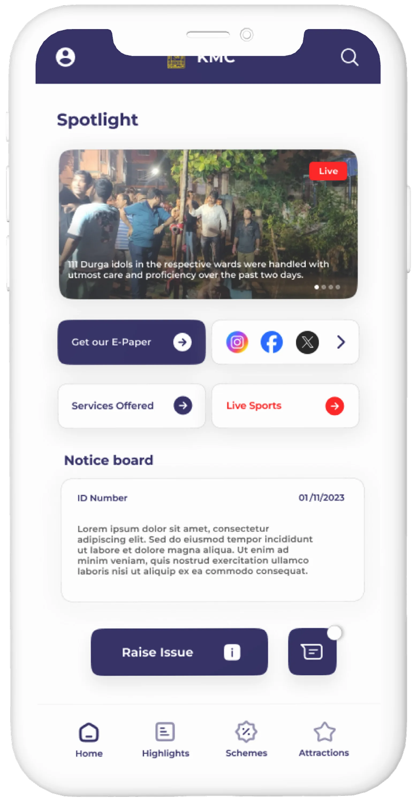

MyCouncillor
Reporting neighbourhood issues and managing ward fixes
MyCouncillor connects residents directly with their ward councillors. I designed the full experience: making it easy for citizens to report problems with photos and GPS, and giving councillors a dashboard to assign repair crews and track fixes through to completion.

The parts that make reporting easy for citizens, and make the resulting queue of complaints something a ward office can work through instead of drowning in.
Automatic GPS detection, a pin you can adjust manually on the map, straightforward categories (potholes, streetlights, garbage, water), and photo uploads.
A simple 6-step timeline for every report: Reported, Under Review, Assigned to Crew, Work in Progress, Fixed (with photo), Citizen Confirmed.
Routes reports to the right local department and field team automatically, based on the incident's GPS coordinates.
A single view for councillors and staff: pending tickets, heatmaps of frequent complaints, and resolution times.
I owned this one top to bottom, and handed the engineering team Figma components and detailed flow specs to build from.
- Designed the resident app from scratch: simple login, camera uploads, automatic location detection.
- Built the councillor dashboard for reviewing complaints, dispatching workers, and sending status updates.
- Added a photo verification rule: repair crews have to upload a photo of the completed fix before a ticket can close.
- Designed community features like councillor office hours, public notices, and ongoing local development updates.
- Built an accessible design system with high-contrast text and clear icons, ensuring comfort for citizens of all age groups.
Civic tools usually fail when reports disappear into bureaucracy. Visible steps keep everyone accountable.
- Built a 6-step progress tracker for every ticket: Reported, Under Review, Assigned to Crew, Work in Progress, Fixed (with photo), Citizen Confirmed.
- Organized complaints into 5 distinct civic categories: Roads, Water, Garbage & Sanitation, Streetlights, and Parks.
- Tested the app with local residents of all ages and trimmed the reporting flow down to 3 quick steps: snap a photo, confirm location, submit.
- Grouped complaints within part numbers to prevent duplicate tickets for the same issue.
This replaced lost paper complaints and endless phone calls with something open, accountable, and trackable. Residents get real-time visibility into their issues, and the councillor's office gets a structured triage queue.
Click any screen below to inspect citizen reporting screens, councillor triage dashboards, and worker routing consoles.